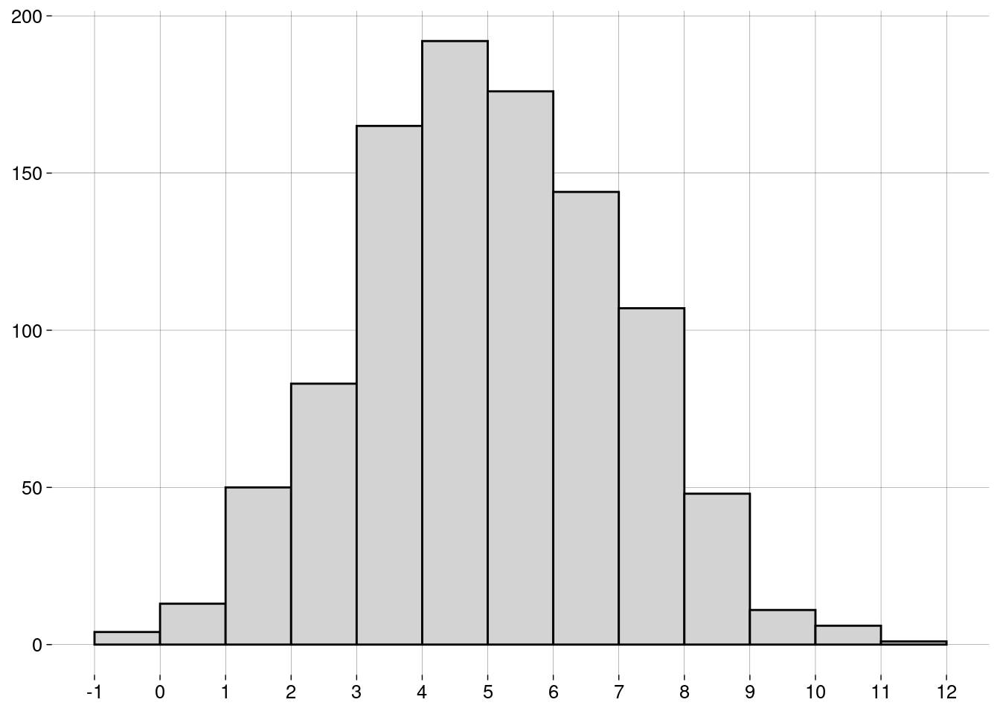
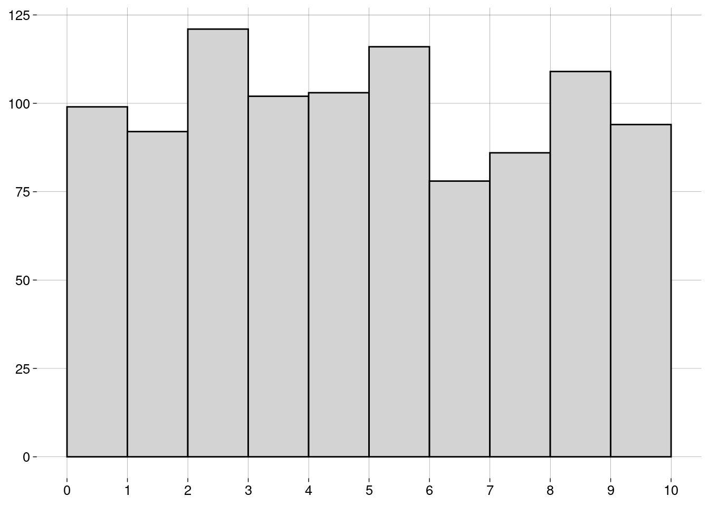
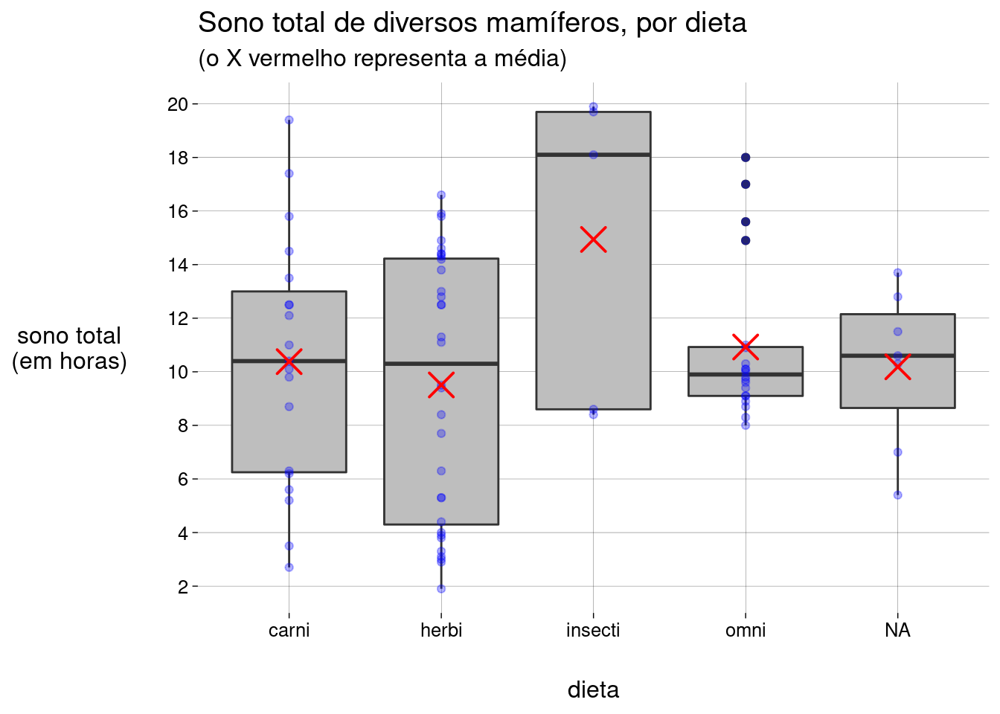

Capítulo 6 Medidas
6.2 Medidas de centralidade
6.2.1 Média
-
A média de uma população é escrita como \(\mu\), e é definida como \[\mu = \frac{\sum_{i=1}^N x_i}{N}\]
\(\sum_{i=1}^N x_i\) é a soma de todos os dados da população.
\(N\) é a quantidade de elementos na população.
-
A média de uma amostra é escrita como \(\bar x\), e é definida como: \[\bar x = \frac{\sum_{i=1}^n x_i}{n}\]
\(\sum_{i=1}^n x_i\) é a soma de todos os dados da amostra.
\(n\) é a quantidade de elementos na amostra.
O cálculo é essencialmente o mesmo. Só mudam os símbolos: \(N\) versus \(n\), e \(\mu\) versus \(\bar x\).
6.2.2 Mediana
Já aprendemos sobre a mediana na seção sobre boxplots.
A idéia é que, depois de ordenar os dados, \(50\%\) dos dados estarão à esquerda da mediana, e \(50\%\) à direita.
A mediana não é tão sensível a outliers quanto à média.
6.2.3 Moda
A moda é o valor mais frequente do conjunto de dados.
Pode haver mais de uma moda.
Não existe uma função para a moda em R base. Por quê?
Por incrível que pareça, é complicado definir a moda de forma a conseguir resultados interessantes.
-
Por exemplo, vamos definir um conjunto de \(1000\) valores numéricos distribuídos normalmente4, com média igual a \(5\) e desvio-padrão5 igual a \(2\):
normal <- rnorm(1000, mean = 5, sd = 2) -
O histograma dos nossos dados é
 -
Vamos calcular a moda com a função
mfv(most frequent value), do pacotemodeest:## Registered S3 method overwritten by 'rmutil': ## method from ## print.response httr# Por causa de um bug na função mfv, # precisamos de números com ponto decimal # (em vez de vírgula): options(OutDec = '.') mfv(normal)## [1] -2.06213576 -1.16050195 -0.96704063 -0.23131890 -0.14220524 -0.05114060 ## [7] -0.01311751 0.07666711 0.10295162 0.15181400 0.18867863 0.23125996 ## [13] 0.24867776 0.29340331 0.35287975 0.43458205 0.43673840 0.45442312 ## [19] 0.49445193 0.50623345 0.56744010 0.76125855 0.80847470 0.86475648 ## [25] 0.89273481 0.89388124 0.91618374 0.92700818 0.95341125 0.96580121 ## [31] 1.03212824 1.08853903 1.12469871 1.21017114 1.21288997 1.26431384 ## [37] 1.26936904 1.27708586 1.34413436 1.37050449 1.37108276 1.39902158 ## [43] 1.42815577 1.44335053 1.46637618 1.47152085 1.48189421 1.48365668 ## [49] 1.49260215 1.58309037 1.59722345 1.61706145 1.65063198 1.67027801 ## [55] 1.71281302 1.72663147 1.73427434 1.76980641 1.77075116 1.80156270 ## [61] 1.80321872 1.84032617 1.85768569 1.87076474 1.91634989 1.92581359 ## [67] 1.98077540 2.00372329 2.01652754 2.01872631 2.05423882 2.06619690 ## [73] 2.07965899 2.08069329 2.10197535 2.15238568 2.16407037 2.16882049 ## [79] 2.16898199 2.17269840 2.17371100 2.20752548 2.20979091 2.22505712 ## [85] 2.23347958 2.24623678 2.25219891 2.26055854 2.27091323 2.28282957 ## [91] 2.28391719 2.35401673 2.35406833 2.36668996 2.39257438 2.44027922 ## [97] 2.44549690 2.45016082 2.45644382 2.46758206 2.46798333 2.46995764 ## [103] 2.46997047 2.47754854 2.48084234 2.49127612 2.51462033 2.51493301 ## [109] 2.51874931 2.59341688 2.59745695 2.60217282 2.60515052 2.60924229 ## [115] 2.63060373 2.63976854 2.64111420 2.64766596 2.69084954 2.69597145 ## [121] 2.71212751 2.71583325 2.72064011 2.73720396 2.73775258 2.73799600 ## [127] 2.74856361 2.75509972 2.76371230 2.76615778 2.77186392 2.77720206 ## [133] 2.78009085 2.78598711 2.79436242 2.79662936 2.80015938 2.80690357 ## [139] 2.83145416 2.87032009 2.88235483 2.88829839 2.89572494 2.90660312 ## [145] 2.90930699 2.92070238 2.92647101 2.95274161 2.96208908 2.99239372 ## [151] 3.02910737 3.03284160 3.04439624 3.04592589 3.05837538 3.07263450 ## [157] 3.08926333 3.09910112 3.10916922 3.11057554 3.11316741 3.11790421 ## [163] 3.11838250 3.12584978 3.12692132 3.14823390 3.14840119 3.15150657 ## [169] 3.15497016 3.15853529 3.16477526 3.17309052 3.17464346 3.18547268 ## [175] 3.19058204 3.19369435 3.20235059 3.22044515 3.22126501 3.22564560 ## [181] 3.22733812 3.24057410 3.24064006 3.24459454 3.25273179 3.26483872 ## [187] 3.26847998 3.27136413 3.28201099 3.30037873 3.30326998 3.30982254 ## [193] 3.31433515 3.31493563 3.31893416 3.33251941 3.33321968 3.33356890 ## [199] 3.33653053 3.34671043 3.34900575 3.34931529 3.35677895 3.36125973 ## [205] 3.37162036 3.37360294 3.37867812 3.39221624 3.39309680 3.39313873 ## [211] 3.39548898 3.39575874 3.41235069 3.41621906 3.41773528 3.41796960 ## [217] 3.42365962 3.42777705 3.43102244 3.44097707 3.44230621 3.44752295 ## [223] 3.45383549 3.46090037 3.46400101 3.46944498 3.47586840 3.47737434 ## [229] 3.47927424 3.48790363 3.48889950 3.49721588 3.50653546 3.51324431 ## [235] 3.52056006 3.52672495 3.53448900 3.54942159 3.56049572 3.56119002 ## [241] 3.57203400 3.57289560 3.58313901 3.58765301 3.59035189 3.59394201 ## [247] 3.60402335 3.60544392 3.60735123 3.61494786 3.62843615 3.63529374 ## [253] 3.67161390 3.67327456 3.69357443 3.70579341 3.70680669 3.71019485 ## [259] 3.72651452 3.73986627 3.74078121 3.74713052 3.74901352 3.75559022 ## [265] 3.75717065 3.76131607 3.76901692 3.77530330 3.77963881 3.78555141 ## [271] 3.79298806 3.79387415 3.79409570 3.80409016 3.80754107 3.82751153 ## [277] 3.85047759 3.85318964 3.85916054 3.87266139 3.88734531 3.89583107 ## [283] 3.89673511 3.90064250 3.90791189 3.91208453 3.91997601 3.92062483 ## [289] 3.92659343 3.92972551 3.93611412 3.93920295 3.94047911 3.95055004 ## [295] 3.95476479 3.97131900 3.97338885 3.97798332 3.98176530 3.98864896 ## [301] 3.99695801 3.99807443 4.02471291 4.04216870 4.06141496 4.06210231 ## [307] 4.06309080 4.06417972 4.06771287 4.07862729 4.07906605 4.07968564 ## [313] 4.08242935 4.08927883 4.09004969 4.10118109 4.10321977 4.10361026 ## [319] 4.10471215 4.10472749 4.11557483 4.11847205 4.11858191 4.12474903 ## [325] 4.12642323 4.13484085 4.14116569 4.14200014 4.14326616 4.15188570 ## [331] 4.15763177 4.16331915 4.16709290 4.18349107 4.18745177 4.19900467 ## [337] 4.20300947 4.22190017 4.22953768 4.23175223 4.25058513 4.25241880 ## [343] 4.26352884 4.26795402 4.27315968 4.27580719 4.27655404 4.28941089 ## [349] 4.29054841 4.30125128 4.30646120 4.30804424 4.31702144 4.32355977 ## [355] 4.32371720 4.32525505 4.33148103 4.34044763 4.34723799 4.34939611 ## [361] 4.36126441 4.36716352 4.37610326 4.38032902 4.38107680 4.38243209 ## [367] 4.38317650 4.39100971 4.39300808 4.39710686 4.39765883 4.40308003 ## [373] 4.41838316 4.42203499 4.43463740 4.43884177 4.45471699 4.45836651 ## [379] 4.45945250 4.46533779 4.46787372 4.47779237 4.47909100 4.48107616 ## [385] 4.48137506 4.48164972 4.49165768 4.49293693 4.49878210 4.50030195 ## [391] 4.50772182 4.51851089 4.52292689 4.53697399 4.54065708 4.54242188 ## [397] 4.55008113 4.55490504 4.57705609 4.57791302 4.58794022 4.58979138 ## [403] 4.59270128 4.61011959 4.61270494 4.61523758 4.61663889 4.61785793 ## [409] 4.61874243 4.62309534 4.63454773 4.63724304 4.63801323 4.63849668 ## [415] 4.64824419 4.65722393 4.65736766 4.66066295 4.66482624 4.66744680 ## [421] 4.67420492 4.67733654 4.68612149 4.68718325 4.69322680 4.69576754 ## [427] 4.69676393 4.70752412 4.71855120 4.71954334 4.72505363 4.72971996 ## [433] 4.74367260 4.74949561 4.75790276 4.76672959 4.77780286 4.79086047 ## [439] 4.80245679 4.80496015 4.80766147 4.80924889 4.81050894 4.82039985 ## [445] 4.82081504 4.82361208 4.83655164 4.83694708 4.83879473 4.84331979 ## [451] 4.84423509 4.84575181 4.85383349 4.85826962 4.85945134 4.86825331 ## [457] 4.86904233 4.87717437 4.89516581 4.90875486 4.91055308 4.91080865 ## [463] 4.91535992 4.91780351 4.93934403 4.94159224 4.94440716 4.94481970 ## [469] 4.96030869 4.96037981 4.97002600 4.97791515 4.99071801 4.99078441 ## [475] 4.99104433 4.99972617 5.00468303 5.00521289 5.00881742 5.01621311 ## [481] 5.01652262 5.01721736 5.01919384 5.02001236 5.02203686 5.03579849 ## [487] 5.03614154 5.04080526 5.04832494 5.05961773 5.06186047 5.06312210 ## [493] 5.06320361 5.06523189 5.06666754 5.06908297 5.07448725 5.08421237 ## [499] 5.09150965 5.09237022 5.09471419 5.09785951 5.09861237 5.09871501 ## [505] 5.09998874 5.10344810 5.10549900 5.10744773 5.12099929 5.12199565 ## [511] 5.12691636 5.12702203 5.13525728 5.15242390 5.15580005 5.16196580 ## [517] 5.16361695 5.18464003 5.18561082 5.19826985 5.20371119 5.21068170 ## [523] 5.21097631 5.21975161 5.22270727 5.22813892 5.23509362 5.23568847 ## [529] 5.24246301 5.25412280 5.25717066 5.27556579 5.28279162 5.29182420 ## [535] 5.30196232 5.30305864 5.30331009 5.30506195 5.30958365 5.30961626 ## [541] 5.31233275 5.31301689 5.31536806 5.34273170 5.34691247 5.35122632 ## [547] 5.35167396 5.35195152 5.35294246 5.35778703 5.35826138 5.36400006 ## [553] 5.36401530 5.36483754 5.38071547 5.38416396 5.38989097 5.39046612 ## [559] 5.39451529 5.39828557 5.40050668 5.40117888 5.40134452 5.40405934 ## [565] 5.40472002 5.40798659 5.41055117 5.41086327 5.42130393 5.42477573 ## [571] 5.42673502 5.42875924 5.43774478 5.44187489 5.44290209 5.44797606 ## [577] 5.44908119 5.45567406 5.45622629 5.45754876 5.46186111 5.47344878 ## [583] 5.47624975 5.48165061 5.49160362 5.49237611 5.49997897 5.50489337 ## [589] 5.50829859 5.50849503 5.51290787 5.51493818 5.51689534 5.52094496 ## [595] 5.52251236 5.52359334 5.52725562 5.52797177 5.53889937 5.54390483 ## [601] 5.55073031 5.55194658 5.56837497 5.57209116 5.57445565 5.57646142 ## [607] 5.58209730 5.58281328 5.58744291 5.58795063 5.59971122 5.60041421 ## [613] 5.60673317 5.60790997 5.60845160 5.60875125 5.62084883 5.62283326 ## [619] 5.62365932 5.63135369 5.63575179 5.63754628 5.64392987 5.64473004 ## [625] 5.66521709 5.67698296 5.68112347 5.68388039 5.68657545 5.68669185 ## [631] 5.68825221 5.69932123 5.70146789 5.72133185 5.73097073 5.73568441 ## [637] 5.74656741 5.75103344 5.75365454 5.75591498 5.76164861 5.76281139 ## [643] 5.76439599 5.76580796 5.77136125 5.77151330 5.77244734 5.79934663 ## [649] 5.80054283 5.80611898 5.80971111 5.82159671 5.83076288 5.83500341 ## [655] 5.84800690 5.84985509 5.84999601 5.85647699 5.86095198 5.87278754 ## [661] 5.87329710 5.88116224 5.88508963 5.88521034 5.88690879 5.88983546 ## [667] 5.89672187 5.89833545 5.90131512 5.91775245 5.92496538 5.92662657 ## [673] 5.93881098 5.94181015 5.96336493 5.96526945 5.97340928 5.98113816 ## [679] 5.98793121 5.98852910 5.99058220 5.99270392 5.99925208 6.00246635 ## [685] 6.00852767 6.00966025 6.01036542 6.01892762 6.03479426 6.04081455 ## [691] 6.04212264 6.06178922 6.06478951 6.08334659 6.08726041 6.09451900 ## [697] 6.09472370 6.10437875 6.10629430 6.11557393 6.11956514 6.13081768 ## [703] 6.13270393 6.13901465 6.14648928 6.14891150 6.15001080 6.15081731 ## [709] 6.15529284 6.16056473 6.18061159 6.19029346 6.21508762 6.23722372 ## [715] 6.25253944 6.25648640 6.27225141 6.27559271 6.27625733 6.29271681 ## [721] 6.29456874 6.29917423 6.31222083 6.31380041 6.31380086 6.31621326 ## [727] 6.31747445 6.32938946 6.33079777 6.33183587 6.33464468 6.33842813 ## [733] 6.34184389 6.34914673 6.34993495 6.34997466 6.35388811 6.35765277 ## [739] 6.35805418 6.35856075 6.35986911 6.35996953 6.36281973 6.37296478 ## [745] 6.37546751 6.38162670 6.38183668 6.38678925 6.39068098 6.39246229 ## [751] 6.39439326 6.39546591 6.40132869 6.40703187 6.40885713 6.41095045 ## [757] 6.41271700 6.42776826 6.43898448 6.44690237 6.45182083 6.46183403 ## [763] 6.46732522 6.47160710 6.47543698 6.47911579 6.47933467 6.48832089 ## [769] 6.49540062 6.50563620 6.51625186 6.53735753 6.54658221 6.56137432 ## [775] 6.56984460 6.57495175 6.58591802 6.61068236 6.61271020 6.63672907 ## [781] 6.63711893 6.63908943 6.66814925 6.67554899 6.67886757 6.67897217 ## [787] 6.69367328 6.69738189 6.69806596 6.70289856 6.71361945 6.72474036 ## [793] 6.72794919 6.74127409 6.74292892 6.74613672 6.76707593 6.77030748 ## [799] 6.78233980 6.78761060 6.79241040 6.80363189 6.80927120 6.81370262 ## [805] 6.81668905 6.84278563 6.86789946 6.88163402 6.88881148 6.89166951 ## [811] 6.90171514 6.90635543 6.91923488 6.92668261 6.93055464 6.93221723 ## [817] 6.93823639 6.94822141 6.95408287 6.95810897 6.97138220 6.97248981 ## [823] 6.97266403 6.99880555 7.00130666 7.00174433 7.00708628 7.01829844 ## [829] 7.02068992 7.02122782 7.02341602 7.03328460 7.03505366 7.04850971 ## [835] 7.06615714 7.08062419 7.08734513 7.09283377 7.09704613 7.11095799 ## [841] 7.11514053 7.14088339 7.15055796 7.15121615 7.15745440 7.15832140 ## [847] 7.16191152 7.16479761 7.16653482 7.17110266 7.17336247 7.19512635 ## [853] 7.19894503 7.20641791 7.21360486 7.22233335 7.22286417 7.22867219 ## [859] 7.23334792 7.25112184 7.25183852 7.27596189 7.27736620 7.28626561 ## [865] 7.28712015 7.31099603 7.31275114 7.33209014 7.34124275 7.37091086 ## [871] 7.37423834 7.37896203 7.38067659 7.38612285 7.38737410 7.39573609 ## [877] 7.40207017 7.41675740 7.42870839 7.42923748 7.42987908 7.43537086 ## [883] 7.43613257 7.43874994 7.44166838 7.44333929 7.47013404 7.47646505 ## [889] 7.48635195 7.49197535 7.51166198 7.51301423 7.57590491 7.58020020 ## [895] 7.58443614 7.61936990 7.62216495 7.64018525 7.64738154 7.64778873 ## [901] 7.66362674 7.66586199 7.67092370 7.69646318 7.72535235 7.72603511 ## [907] 7.73889136 7.74703731 7.75796472 7.77063234 7.78115885 7.78763669 ## [913] 7.79655019 7.82168439 7.82191873 7.82800477 7.83400923 7.83702315 ## [919] 7.84573136 7.84878320 7.84950991 7.85481068 7.86833148 7.88476059 ## [925] 7.90010066 7.92726572 7.92943497 7.94251625 7.96485938 7.98673242 ## [931] 7.98706626 7.98858264 7.99394130 8.00670504 8.00755161 8.01204728 ## [937] 8.04017369 8.04871487 8.06234166 8.07169882 8.07757316 8.10300181 ## [943] 8.14173667 8.15542549 8.15863962 8.16375621 8.18052743 8.20861672 ## [949] 8.22676521 8.24142375 8.24151799 8.29462275 8.30490573 8.30565993 ## [955] 8.30599681 8.30776324 8.31511577 8.31659613 8.32437553 8.32498026 ## [961] 8.32981681 8.37986200 8.38904128 8.42846641 8.51796507 8.54827613 ## [967] 8.58200776 8.62831891 8.68372958 8.71987357 8.77218399 8.80687420 ## [973] 8.83662706 8.85760162 8.90098455 8.90747927 8.91138694 8.94006770 ## [979] 9.00862528 9.08190390 9.15704068 9.19241816 9.24908319 9.29741985 ## [985] 9.30752213 9.33257721 9.41689369 9.52665636 9.59589964 9.64575390 ## [991] 9.77371339 9.81172471 9.92654168 9.96719373 9.96830287 10.04590974 ## [997] 10.08468059 10.28188200 10.43117047 10.49141558# Voltamos para a vírgula como separador decimal: options(OutDec = ',') O que houve?!
O problema é que não há valores repetidos no conjunto de dados! Por isso, todos os \(1000\) valores são modais.
-
Uma maneira de evitar isto é definir a moda como o centro do intervalo mais curto que contém metade dos dados. Usamos a função
mlv(most likely value):moda <- mlv(normal, method = 'venter') moda## [1] 5,089425 -
Esta moda estimada pode nem estar no conjunto de dados:
moda %in% normal## [1] FALSE Mas o resultado de
mlv()é útil, pois nos diz que, embora não haja valores repetidos, valores próximos de \(5\) são mais frequentes, como mostra o histograma.
6.2.3.1 Exercícios
-
Arrendonde os valores no vetor
normalpara \(2\) casas decimais e ache a(s) moda(s)com a função
mfv, ecom a função
mlv, usando o métodoventer.
Considerando o histograma, qual das respostas você prefere? Por quê?
6.3 Formas de uma distribuição
- A forma do histograma mostra aspectos importantes da distribuição dos dados.
6.3.1 Distribuição Uniforme
-
Se o histograma tem todas as barras aproximadamente da mesma altura, dizemos que a distribuição é uniforme:
 A distribuição uniforme não tem moda, já que todos os valores têm aproximadamente a mesma frequência.
6.3.2 Simetria
Se o histograma for simétrico (i.e., os lados esquerdo e direito são “espelhados”), dizemos que a distribuição é simétrica.
A distribuição normal do exemplo acima é simétrica.
A distribuição uniforme também é simétrica.
-
Para distribuições simétricas, a média, a mediana e a moda (quando existe e é única) são bem próximas.
-
Uma distribuição pode ser simétrica, mas ter duas (ou mais) modas diferentes:

Algumas distribuições não são simétricas, mas têm uma cauda longa à esquerda ou à direita.
Dependendo da cauda, as distribuições são chamadas de assimétricas à esquerda ou assimétricas à direita.
-
Um exemplo: receitas anuais (em milhões de dólares) de CEOs de grandes empresas:
## Rows: 500 ## Columns: 9 ## $ Rank <dbl> 1, 2, 3, 4, 5, 6, 7, 8, 9, 10, 11, 12, 13, 14, 15, 16… ## $ Name <chr> "John H Hammergren", "Ralph Lauren", "Michael D Fasci… ## $ Company <chr> "McKesson", "Ralph Lauren", "Vornado Realty", "Kinder… ## $ `1-Year Pay ($mil)` <dbl> 131,190, 66,650, 64,405, 60,940, 55,790, 51,525, 50,1… ## $ `5 Year Pay ($mil)` <dbl> 285,020, 204,060, NA, 60,940, 96,110, 100,210, 90,300… ## $ `Shares Owned ($mil)` <dbl> 51,9, 5010,4, 171,7, 8582,3, 21,5, 47,3, 128,2, 155,8… ## $ Age <dbl> 53, 72, 55, 67, 59, 57, 55, 59, 61, 60, 59, 56, 63, 5… ## $ Efficiency <dbl> 121, 84, NA, NA, 138, 36, 12, NA, 91, 131, 150, NA, 1… ## $ `Log Pay` <dbl> 8,117901, 7,823800, 7,808920, 7,784902, 7,746556, 7,7… -
Vamos usar apenas os nomes e os valores anuais:
-
Um histograma:
salarios %>% ggplot(aes(x = valor)) + geom_histogram(breaks = seq(0, 150, 2.5)) + scale_x_continuous(breaks = seq(0, 150, 10)) + labs(y = NULL)
É uma distribuição assimétrica à direita: a maior parte dos CEOs têm receitas anuais “baixas”, de menos de \(10\) milhões. À medida que examinamos valores maiores, a quantidade de CEOs vai diminuindo lentamente.
Observe que a longa cauda à direita “puxa” a média para um valor mais alto do que a mediana.
-
A moda, que corresponde à barra mais alta do histograma, é menor que a mediana (e que a média):
sumario <- salarios %>% summarise( moda = mlv(valor, method = 'venter'), mediana = median(valor), media = mean(valor) ) sumario -
Em um boxplot, também é possível detectar a assimetria pela grande quantidade de outliers em um extremo:
salarios %>% ggplot(aes(y = valor)) + geom_boxplot() + scale_x_continuous(breaks = NULL) + scale_y_continuous(breaks = seq(0, 150, 10))
Com distribuições assimétricas à esquerda, a situação se inverte: a média é menor que a mediana, que é menor que a moda.
6.4 Re-expressão
Muitas vezes, é recomendável transformar a escala dos dados para que uma distribuição assimétrica se torne simétrica.
-
No exemplo das receitas dos CEOs, podemos tomar os logaritmos dos valores, em vez dos valores:
salarios_log %>% ggplot(aes(x = log_valor)) + geom_histogram(bins = 20) + labs( x = TeX('$\\log_{10}$ valor'), y = NULL )## Warning: Removed 3 rows containing non-finite values (stat_bin).
O logaritmo de um número na base \(10\) é, essencialmente, a quantidade de dígitos do número, vista como uma grandeza contínua.
Logaritmos negativos vêm de valores entre \(0\) e \(1\).
Logaritmo zero vem do valor \(1\).
Valores iguais ou menores que zero não têm logaritmo definido.
-
Por isso a mensagem de aviso sobre \(3\) valores removidos. São valores iguais a zero:
Uma vantagem desta escala logarítmica é que podemos entender melhor o histograma. Os dados não estão amontoados de um lado só.
6.5 Medidas de posição
6.5.1 Quantis
Na seção sobre boxplots, falamos sobre quantis, que são medidas de posição.
-
Em R, a função
quantilecalcula quantis de um vetor:## 0% 25% 50% 75% 100% ## 0,00000 3,88500 6,96750 13,36125 131,19000 -
Você pode passar frações entre \(0\) e \(1\) para
quantile. Por exemplo, para calcular o primeiro, o quinto, e o décimo percentis6 das receitas dos CEOs:## 1% 5% 10% ## 0,48695 1,48405 2,19400
6.6 Medidas de dispersão
Tão importantes quanto as medidas de centralidade são as medidas de dispersão (ou espalhamento).
Elas informam o quanto os dados variam.
6.6.1 Amplitude
Uma medida simples é a diferença entre o valor máximo e o valor mínimo.
-
Lembrando do nosso exemplo das idades dos alunos:
idades## [1] 20 20 20 20 20 20 21 21 21 21 22 22 22 23 23 23 23 24 24 65 -
A função
rangeretorna o mínimo e o máximo:range(idades)## [1] 20 65 -
A amplitude destes dados é, então
## [1] 45 A diferença de idade entre o aluno mais novo e o mais velho é de \(45\) anos, um valor alto, por causa do velhinho.
6.6.2 IQR
Na seção sobre boxplots, também falamos sobre o intervalo interquartil (IQR).
-
No boxplot, é a altura da caixa. Para as idades dos alunos:
idades %>% as_tibble() %>% ggplot(aes(y = value)) + geom_boxplot() + scale_x_continuous(breaks = NULL) + scale_y_continuous(breaks = seq(20, 70, 5))
-
O IQR é a diferença entre o primeiro e o terceiro quartis:
summary(idades)## Min. 1st Qu. Median Mean 3rd Qu. Max. ## 20,00 20,00 21,50 23,75 23,00 65,00## [1] 3IQR(idades)## [1] 3 Ou seja, os \(50\%\) centrais dos alunos têm idade entre \(20\) e \(23\) anos, um IQR de \(3\).
É uma variação pequena, porém mais fiel à realidade do que a amplitude, que é alta por causa do velhinho.
Quanto maior o IQR, mais espalhados estão os dados.
6.6.3 Variância
-
Agora, vamos trabalhar com os pesos (kg) e alturas (m) de um time de basquete:
medidas <- tibble( altura = .025 * c(72, 74, 68, 76, 74, 69, 72, 79, 70, 69, 77, 73), peso = 0.45 * c(180, 168, 225, 201, 189, 192, 197, 162, 174, 171, 185, 210) ) medidassummary(medidas$altura)## Min. 1st Qu. Median Mean 3rd Qu. Max. ## 1,700 1,744 1,812 1,819 1,863 1,975summary(medidas$peso)## Min. 1st Qu. Median Mean 3rd Qu. Max. ## 72,90 77,96 84,15 84,53 89,10 101,25 A variância é a maneira mais usada de medir o espalhamento em torno da média.
Para calcular a variância das alturas e a variância dos pesos, precisamos calcular valores intermediários.
-
O desvio de um valor é a diferença entre o valor e a média. O desvio pode ser positivo ou negativo.
d_medidas <- medidas %>% mutate( d_altura = altura - mean(altura), d_peso = peso - mean(peso) ) d_medidas -
Vamos calcular o desvio médio das alturas e o desvio médio dos pesos:
Não foi uma boa idéia. O desvio médio sempre é igual a zero.7 (O R pode mostrar algum valor diferente de zero por causa da precisão limitada dos números de ponto flutuante.)
-
Como resolver isto? Elevando os desvios ao quadrado:
Agora temos os desvios quadrados, que são todos positivos.
-
O desvio quadrado médio vai ser a variância:
Uma vantagem da variância é que outliers (que têm desvios quadrados maiores) contribuem mais do que elementos próximos à média (que têm desvios quadrados menores).
Uma desvantagem da variância é que a sua unidade é o quadrado da unidade dos valores.
Neste exemplo, as unidades são \(m^2\) e \(kg^2\)!
6.6.4 Desvio-padrão
É melhor trabalhar com a raiz quadrada da variância, que chamamos de desvio-padrão.
-
As unidades são as mesmas que as unidades dos dados.
-
Claro que o R tem funções para calcular isso:
varesd(standard deviation):medidas %>% summarize( altura_var = var(altura), altura_dp = sd(altura), peso_var = var(peso), peso_dp = sd(peso) ) Mas os valores são diferentes dos que calculamos. Por quê?
6.6.5 Definições
-
Para uma população com \(N\) elementos e média \(\mu\), a variância é
\[ \sigma^2 = \frac{\sum_{i=1}^N (x_i - \mu)^2}{N} \]
e o desvio-padrão é
\[ \sigma = \sqrt{\frac{\sum_{i=1}^N (x_i - \mu)^2}{N}} \]
-
Para uma amostra com \(n\) elementos e média \(\bar x\), a variância é
\[ s^2 = \frac{\sum_{i=1}^n (x_i - \bar x)^2}{n-1} \]
e o desvio-padrão é
\[ s = \sqrt{\frac{\sum_{i=1}^n (x_i - \bar x)^2}{n -1}} \]
Nós calculamos a versão populacional destas medidas.
R calcula a versão amostral destas medidas.
Reveja os cálculos e entenda a diferença.
Note, também, que as medidas populacionais são representadas por letras gregas — \(\mu\), \(\sigma^2\), \(\sigma\) —, enquanto as medidas amostrais são representadas por letras latinas — \(\bar x\), \(s^2\), \(s\).
Mais adiante no curso, você vai entender por que o denominador da variância amostral é \(n - 1\), em vez de \(n\).
Nada é por acaso, nem mesmo em Estatística.
6.6.6 Exercícios
Quando a variância e o desvio-padrão de um conjunto de dados são iguais a zero?
-
Mostre que o desvio médio de qualquer conjunto de valores é igual a zero.
Ou seja, considere o conjunto
\[ \{x_1, x_2, \ldots, x_n\} \]
e prove que
\[ \sum_{i = 1}^n (x_i - \bar x) = 0 \]
Manipule apenas as variáveis \(x_i\). Não use exemplos, pois eles não provam o enunciado geral.
Dica: lembre que \(\displaystyle \bar x = \frac{\sum_{i = 1}^n x_i}{n}\).
6.7 Coeficiente de variação
Em um conjunto de dados, o desvio-padrão é uma medida importante da variação dos dados.
Mas a unidade do desvio-padrão muda de um conjunto de dados para outro: alturas em metros, pesos em quilos etc.
Podemos eliminar as unidades expressando o desvio-padrão em termos da média.
O resultado é a fração \(\frac{\sigma}{\mu}\) (na população) ou \(\frac{s}{\bar x}\) na amostra.
Esta fração é o coeficiente de variação (CV).
O CV não tem unidades.
-
Para as alturas do exemplo dos jogadores de basquete:
A média das alturas é \(1{,}82\) metros.
O desvio-padrão das alturas é \(0{,}09\) metros.
O CV é aproximadamente \(0{,}0473\).
statip::cv(medidas$altura)## [1] 0,04729982Em outras palavras, para as alturas, um desvio-padrão corresponde a \(4{,}73\%\) da média.
-
Para os pesos:
A média dos pesos é \(84{,}53\) quilos.
O desvio-padrão dos pesos é \(8{,}31\) quilos.
O CV é aproximadamente \(0{,}0983\).
statip::cv(medidas$peso)## [1] 0,09834649Em outras palavras, para os pesos, um desvio-padrão corresponde a \(9{,}83\%\) da média.
Segundo estes valores, a variação dos pesos é cerca de \(2\) vezes maior do que a variação das alturas.
O coeficiente de variação sempre faz sentido para dados do nível racional (veja a definição) — i.e., dados onde o zero é absoluto.
Para dados apenas intervalares, o uso do CV pode levar a conclusões absurdas, como você terá chance de ver no exercício.
6.7.1 Exercícios
-
Considere o seguinte conjunto de temperaturas (em graus Celsius):
celsius <- c(0, 10, 20, 30, 40) -
E as mesmas temperaturas (em graus Fahrenheit):
fahrenheit <- 9 * celsius / 5 + 32 -
Calcule para cada um dos dois vetores acima:
A média,
O desvio-padrão,
O coeficiente de variação.
As temperaturas são as mesmas (apenas em unidades diferentes), mas os CVs são diferentes. Por quê?
-
Agora, convertemos as mesmas temperaturas para a escala Kelvin:
kelvin <- celsius + 273.15 -
E para a escala Rankine:
rankine <- fahrenheit + 459.67 -
Calcule para cada um dos dois vetores acima:
A média,
O desvio-padrão,
O coeficiente de variação.
-
Compare:
As médias de
celsiusekelvin,As médias de
fahrenheiterankine,Os desvios-padrão de
celsiusekelvin,Os desvios-padrão de
fahrenheiterankine,Os coeficientes de variação de
kelvinerankine.
Explique o que houve.
6.8 Escores-padrão
Para qualquer conjunto de dados, a unidade usada é uma escolha arbitrária.
Para alturas, por exemplo, podemos usar metros, centímetros, pés, polegadas etc.
A escolha de unidades é tão arbitrária que podemos escolher uma unidade (que dificilmente vai ter nome) que faça com que a média do conjunto de dados seja zero e que o desvio-padrão seja igual a \(1\).
Isto equivale a tomar, como unidade, o desvio-padrão acima da média.
Os valores, nesta nova unidade, são chamados de escores-padrão.
Dizemos que os valores foram padronizados.
Vamos usar as alturas dos jogadores de basquete.
-
Para fazer a altura média virar zero, basta subtrair, de cada altura, a altura média:
alturas <- medidas$altura mean(alturas)## [1] 1,81875## [1] 0 -
Para fazer o desvio-padrão ser igual a \(1\), basta dividir estes valores pelo desvio-padrão dos dados originais:
sd(alturas)## [1] 0,08602656## [1] 1 -
Tome, por exemplo, o seguinte jogador:
altura <- alturas[1] altura## [1] 1,8## [1] -0,217956Faça as contas: o valor da altura padronizada deste jogador significa que a altura dele está \(0{,}217956\) desvios-padrão abaixo da altura média.
-
No geral:
Se a média for \(\bar x\), e
Se o desvio-padrão for \(s\),
Os escores-padrão \(z_i\) vão ser \[ z_i = \frac{x_i - \bar x}{s} \]
-
Em R, a função
scalefaz isso:medidas <- medidas %>% mutate(altura_padronizada = scale(altura)[,1]) medidas %>% select(altura, altura_padronizada)mean(medidas$altura_padronizada)## [1] -0,000000000000000004610683sd(medidas$altura_padronizada)## [1] 1 A função
scalefoi feita para receber e retornar matrizes. Como estamos trabalhando com vetores, usamosscale(altura)[,1]para tomar apenas a primeira (e única) coluna do resultado.
6.8.1 Exercícios
Por que, quando calculamos as alturas deslocadas divididas pelo desvio-padrão das alturas, temos certeza de que a média dos valores resultantes não mudou?
Padronize os pesos dos jogadores de basquete.
Confira a média e o desvio-padrão dos pesos padronizados.
Crie um scatterplot de peso por altura.
Crie um scatterplot de peso padronizado por altura padronizada.
Compare os dois scatterplots. O que muda de um para outro?
6.9 Teorema de Tchebychev
Grosso modo, quanto mais alto o desvio-padrão, maior é a distância da média até os valores.
Ou seja, quanto menor o desvio-padrão, maior é a proporção de valores que estão próximos à média.
-
O teorema de Tchebychev quantifica esta idéia:
Em qualquer distribuição, a proporção de valores dentro de \(\pm k\) desvios-padrão \((k > 1)\) da média é de, no mínimo \[ 1 - \frac{1}{k^2} \]
6.9.1 Exemplo
-
Lembre-se do conjunto de dados sobre os totais de horas de sono de diversos mamíferos:

-
Média e desvio-padrão:
media <- mean(df$value) media## [1] 10,43373dp <- sd(df$value) dp## [1] 4,450357 -
Qual a proporção de espécies que estão a \(1{,}3\) ou menos desvios-padrão de distância da média?
k <- 1.3 inicio <- media - k * dp inicio## [1] 4,648271fim <- media + k * dp fim## [1] 16,2192 -
O teorema diz que no mínimo a seguinte proporção das espécies está dentro deste intervalo:
proporcao_teorema <- 1 - 1 / k^2 proporcao_teorema## [1] 0,408284 -
Graficamente:
 -
Vamos conferir:
## [1] 83## [1] 64proporcao_real <- especies_intervalo / total_especies proporcao_real## [1] 0,7710843 Como o teorema usa apenas a média e o desvio-padrão, e mais nenhuma informação sobre a distribuição dos valores — forma, simetria etc. — o que ele garante é, muitas vezes, mais fraco do que a realidade.
Neste exemplo, o teorema garantia no mínimo \(40{,}83\%\) das espécies a \(1{,}30\) ou menos desvios-padrão de distância da média.
A proporção verdadeira é \(77{,}11\%\) das espécies.
O teorema está certo (claro), mas, sem mais informações sobre a distribuição dos dados, o teorema não pode ser mais preciso.